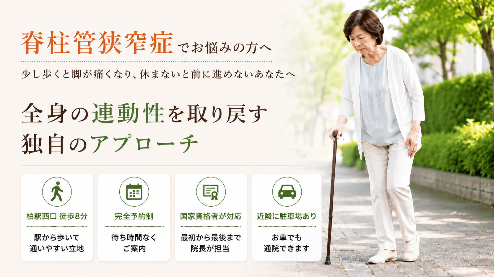
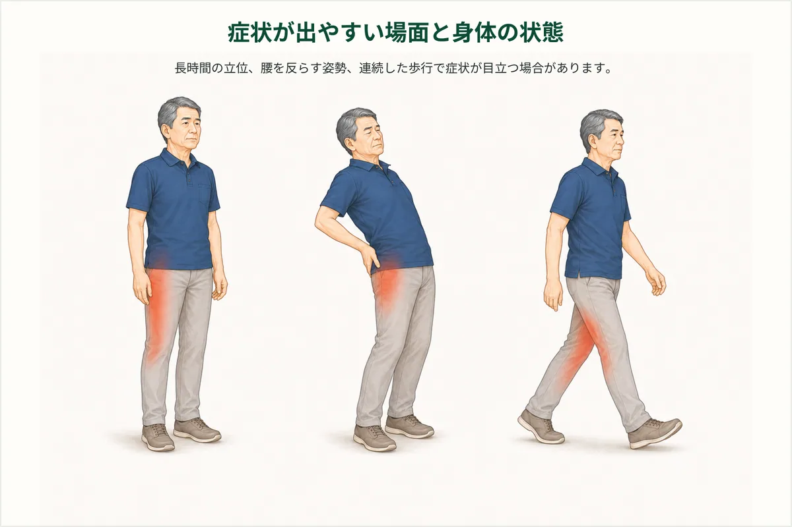

01
立つ・歩くと腰が反りやすい
身体を起こすと腰が強く反る姿勢では、立っているときや歩いているときに腰まわりへ負担が集まりやすくなることがあります。

柏市・柏駅周辺で脊柱管狭窄症に伴う足腰の悩みがある方へ
整体院ひざこぞうでは、腰だけを見るのではなく、立ち方、歩き方、股関節や足腰の動き、身体を支える力まで確認します。整体と運動療法を組み合わせながら、買い物や散歩、旅行、家族との外出を楽しみやすい身体づくりを支えます。
脊柱管狭窄症は、腰の神経が通る空間が狭くなり、立つ・歩くときに脚の痛みやしびれ、重だるさなどを感じることがある状態です。
画像で確認される腰の変化だけでなく、腰が反りやすい姿勢、股関節や背中の動きにくさ、歩き方などが、症状の出方に関わる場合があります。
歩いているとつらくなり、座ったり前かがみで休んだりすると楽になることがありますが、症状や歩ける距離には個人差があります。
当院では画像上の変化を扱うのではなく、「どの姿勢や動作で腰や脚への負担が増えているのか」を確認します。

身体を起こすと腰が強く反る姿勢では、立っているときや歩いているときに腰まわりへ負担が集まりやすくなることがあります。
股関節や背中の動きが少ないと、歩くときに腰がその動きを補い、同じ場所へ負担が重なりやすくなります。
お腹やお尻など、姿勢や歩行を支える筋肉が使いにくいと、腰や脚の一部が頑張りすぎる状態になることがあります。
痛みやしびれが不安で活動量が減ると、脚の筋力や持久力が落ち、以前より短い距離でも疲れやすくなることがあります。

股関節や背中が
動きにくくなる
立つ・歩く動作で
腰へ負担が集まる
神経の周辺へ
負担が重なる
脚の痛み・しびれ・重だるさを感じ、休みたくなる
これは歩行時に症状が出る一例です。脊柱管狭窄症の状態や症状は一人ひとり異なるため、実際には痛みやしびれの範囲、姿勢、歩ける距離、関節の動き、筋肉の働きなどを確認する必要があります。
座ったり前かがみになったりして休むと、腰や脚の症状が一時的に落ち着くことがあります。
しかし、立つ姿勢や歩き方、股関節の動きなど、歩行時に負担を集めている要因が残っていると、歩き始めてから再び症状を感じやすくなります。
大切なのは、無理に歩き続けることでも、動かずに休み続けることでもありません。
身体の状態を確認し、安全な範囲で動き方や休み方を調整しながら、活動量を保つことが大切です。
こうした流れが繰り返されることがあります
腰や脚の症状の中には、医療機関での検査や確認が優先されるものもあります。以下のような症状がある場合は、整体を受ける前に整形外科などの医療機関へご相談ください。
同じ「脊柱管狭窄症」でも、症状が出るまでの距離や姿勢、休むときの体勢、身体の状態は人によって異なります。
柏市の整体院ひざこぞうでは、腰や脚だけを見るのではなく、背中・骨盤・股関節・足首の動き、身体を支える筋肉、歩き方まで確認します。
医療機関での検査内容も伺いながら、現在の状態と当院で行うことを分かりやすくご説明します。

当院では、身体をただ緩めるだけではなく、「動かす・支える・歩き方を整える」という流れで、腰や脚に負担が集中しにくい身体づくりを目指します。
動かす｜可動性
腰だけでなく、股関節・背中・骨盤まわりの状態を確認し、歩くときに動きにくくなっている部分へやさしくアプローチします。
支える｜安定性
お腹やお尻、脚など、立つ・歩く動作を支える筋肉が働きやすくなるように、状態に合わせた運動を行います。
使う｜歩行改善
歩幅や姿勢、休憩の取り方を確認し、症状に配慮しながら日常で続けられる歩き方やセルフケアをお伝えします。
同じ脊柱管狭窄症という診断名でも、歩ける距離、つらくなる姿勢、生活で困っている場面は人によって違います。病名を決めつけるのではなく、現在の身体の特徴と生活上の目標を一緒に整理します。
症状だけでなく、歩ける距離、休む姿勢、これまでの経過、病院で説明された内容、再開したい生活まで確認します。身体の状態と施術方針を説明し、納得いただいたうえで進めます。
止まった姿勢だけで判断せず、立つ、歩く、座る、前かがみ、階段、症状が出る動作を確認します。歩行時の不安や日常生活の困りごとを施術計画に反映します。
股関節や足腰の動き、足腰や体幹で身体を支える力、歩行や立ち座りなどの動作を順番に見ます。専門用語に頼らず、身体の状態を分かりやすく共有します。
手技だけで終わらせず、状態に合った運動や歩き方の練習を組み合わせます。難しすぎる運動を一律に行うのではなく、できる範囲から日常で使える身体づくりを目指します。
通院だけに依存せず、ご自身でも身体を管理しやすくなることを大切にしています。症状や体力に合わせて、無理なく続けられる内容を提案します。
歩ける距離、症状が出る場所、病院で言われたことなどをLINEで送っていただければ、来院前のご相談も可能です。
通院頻度は、症状の強さ、歩ける距離、続いている期間、生活環境、目指す状態によって異なります。
初回に身体の状態を確認したうえで、必要な頻度と期間の目安をご説明します。
無理に通院を勧めることはありませんので、ご希望や生活状況も含めてご相談ください。
一時的に楽に感じることがあっても、強い刺激が合わない場合があります。感覚の変化やしびれがあるときは、身体の反応を確認しながら進めることが大切です。
歩くことは大切ですが、痛みやしびれが強まるほど無理に続ける必要はありません。距離、休み方、姿勢を調整しながら、できる範囲を見つけていきます。
坐骨神経痛 ストレッチや脊柱管狭窄症の体操として紹介されている方法でも、全員に合うとは限りません。症状が増える場合は中止してください。
薬を飲んでいる場合は、自己判断で中止せず、医師や薬剤師の指示を優先してください。整体院では薬の要否を判断しません。
脚の力が入りにくい、排尿や排便の異常がある、症状が急に広がる場合は、整体よりも医療機関への相談を優先してください。
脊柱管狭窄症に伴う足腰の悩みでは、症状の出方や体力によって適した運動が異なります。ここでは無理なく始めるための考え方を紹介します。
長く歩き続けるより、症状が強くなる前に休むほうが合う場合があります。無理のない距離から始め、休憩を挟みながら活動量を保ちましょう。
座りっぱなし、立ちっぱなしが続くと足腰がつらくなることがあります。短い時間で姿勢を変えたり、楽な休み方を確認したりすることが大切です。
ストレッチや体操で強い痛み、しびれ、違和感が増える場合は中止してください。医師から運動制限を受けている場合は、その指示を優先します。
他の人に合った方法が、そのまま自分に合うとは限りません。歩くと足が痛い、ふくらはぎのしびれが出るなど、実際の反応に合わせて内容を調整しましょう。
歩ける距離だけでなく、立ち方・歩き方・足腰の支える力を確認します。
歩くとつらくなる距離、休むと楽になる姿勢、医療機関での説明を伺います。
腰だけでなく、股関節・膝・足首の動きと重心移動を見ます。
足腰や体幹で安定して支えられるかを確認し、日常動作につなげます。
症状の反応を確認しながら、安全な範囲で評価と練習を行います。
検査や医師の方針が必要な場合は、その内容を尊重します。
足の症状が強くなるまで歩き続ける、しびれを我慢して運動する、自己判断で薬を中止することは避けてください。
足の力が入りにくい、感覚が急に変わる、排尿・排便の異常がある場合は、まず医療機関へご相談ください。
歩く時間を分ける、休憩を入れる、股関節や足首を軽く動かすことが合う場合があります。無理に距離を伸ばすのではなく、反応を見ながら進めましょう。
このページの役割
歩行で増える脚の症状や、休むと変化するつらさを中心に、医療機関での検査と整体で確認する日常動作の役割を分けて説明します。
MEDICAL GUIDANCE
症状の出方には個人差があります。迷う場合や症状が強い場合は、まず医療機関へご相談ください。
次のような場合は、整体の予約より医療機関への相談を優先してください。
緊急ではなくても、早めの検査や診察が大切な状態があります。
医療機関との役割を分けながら、次のような相談に対応します。
このページは一般的な情報提供であり、診断を目的とするものではありません。症状や状態は一人ひとり異なるため、必要に応じて医療機関へご相談ください。
写真は左右にスライドできます


予約前に特に多い不安だけを、短くまとめました。
初回カウンセリング＋全身整体コース
カウンセリング・状態確認込み。まずは相談だけでも大丈夫です。
足腰のつらさを一緒に整理し、歩きやすい身体づくりをサポートします。
LINEからご希望日時を送ってください。空き状況を確認して、こちらから返信いたします。
【受付時間】9:00〜19:00 【定休日】日曜
施術中は電話に出られないことがあります。後ほど折り返しお電話いたします。
| 時間 | 月 | 火 | 水 | 木 | 金 | 土 | 日 |
|---|---|---|---|---|---|---|---|
| 9:00〜19:00 | ● | ● | ● | ● | ● | ● | - |
完全予約制／定休日：日曜
詳しい道順・建物入口・駐車場については、アクセスページでご確認いただけます。
最後に、ご相談はこちらから
メールフォームからお名前・お悩み・ご希望日時をお送りください。確認後、折り返しご連絡いたします。
送信が完了しました。
アクセスを確認する